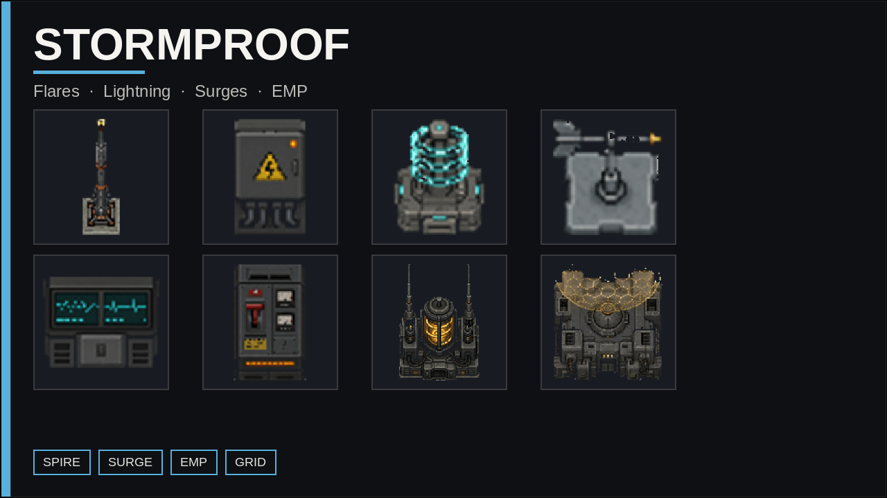
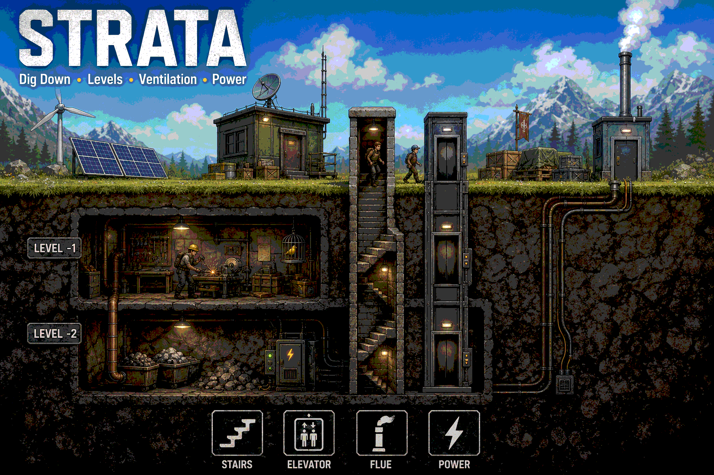
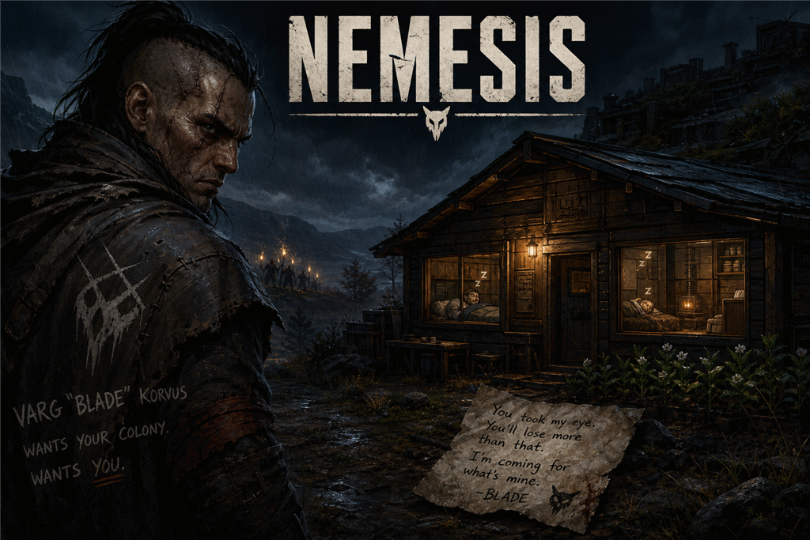
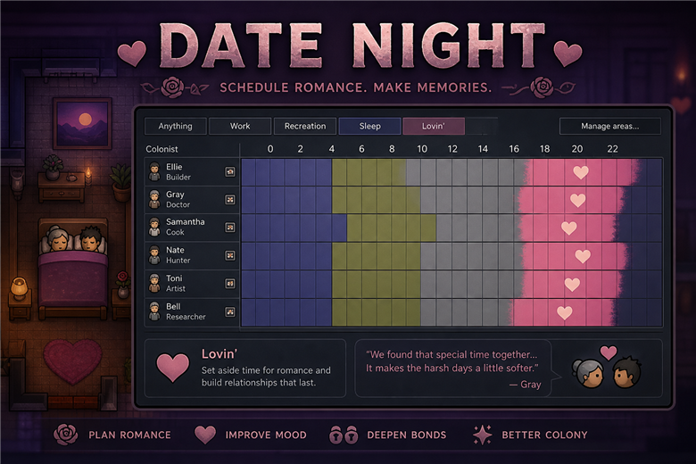

Six mods. One workshop.
Open a mod page for details — or jump straight to Steam / zip downloads below if you cannot use the Workshop.

Homesteader
Farm-to-table craft, wells and irrigation, cool cellars, and off-grid power for tribal and homestead starts.

Stormproof
Defend the power grid from flares, lightning, short circuits, EMP, and fallout — then call the storm yourself.

Strata
Dig down, build up, breathe deep. Multistory bases with commuting colonists and Odyssey-ready stacks.

Nemesis
A named antagonist who taunts, sabotages, and returns with an army — until you end the hunt.
Deep Colony
Perks, trauma & therapy, apprenticeship, inheritance, and a living faction reputation ledger.

Date Night
Paint Lovin on the Schedule tab. Partners meet in a double bed while the hours last.
Steam Workshop or direct zip
Every mod ships as a GitHub release zip for players who cannot use Steam Workshop. Extract into your RimWorld Mods folder. All mods need Harmony.
Homesteader
Food, water, storage, and off-grid power.
Stormproof
Grid defense against the Rim’s worst weather.
Strata
True multistory bases — dig, build, breathe.
Nemesis
A personal antagonist who will not forget.
Deep Colony
Identity, trauma, mentors, and reputation.
Date Night
Schedulable romance on the timetable.
Workshop totals
Subscriber counts load in your browser from Steam. They are not written by GitHub Actions, so stats never force rebase commits on this repo.
Quick comparison
Mix and match — they are designed to share a colony without stepping on each other.
| Mod | Focus | Best for |
|---|---|---|
| Homesteader | Food, water, storage, power | Tribal starts, farming colonies, off-grid bases |
| Stormproof | Grid defense | Industrial colonies, thunderstorm biomes, raid-heavy saves |
| Strata | Multistory bases | Mountain bases, tall colonies, infestation enjoyers |
| Nemesis | Personal antagonist | Colonies with unfinished business |
| Deep Colony | Identity & legacy | Colonies that outlive a single generation |
| Date Night | Schedulable romance | Couples who never find time to share a bed |
Installation
- Subscribe on Steam Workshop or download the zip from Downloads.
- For zips: extract into your RimWorld
Modsfolder — each archive is one mod folder. - Enable Harmony, then the mod(s), and restart.